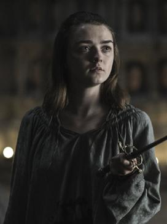

Game of Thrones Characters
Ned Stark

In A Game of Thrones (1996), Ned Stark is introduced as the virtuous and honorable patriarch of House Stark and the father of six children. The moral compass of the story, he is content to remain far from courtly intrigues[5] and is unwavering in his view of loyalty and honor.[6] His family name, Stark, serves as an indication of his resistance to moral compromise, but his boundaries are increasingly tested over the course of the novel.[6] Finding himself a key player in the escalating political intrigue of King's Landing, Ned struggles as his own sense of honor draws him into corrupt goings-on at court.[5][6] As the story progresses, he begins to see the importance of moral and practical compromises to achieve a just end, and is ultimately forced to choose between the safety of his family and doing what is right.[7]
Sean Bean said of the character, "he’s a good man trying to do his best in the middle of this corruption, he’s a fish out of water, he’s used to being up north in Winterfell where people are pretty straight and pragmatic, and he comes down to a place where people are playing games and backstabbing … he’s a principled man who tries to hold things together. This is a journey that he makes where ultimately his loyalty causes his downfall.
"You think my life is some precious thing to me? That I would trade my honor for a few more years... of what? You grew up with actors. You learned their craft and you learnt it well. But I grew up with soldiers. I learned to die a long time ago." - Ned Stark
Jon Snow

Jon is introduced in 1996's A Game of Thrones as the illegitimate son of Ned Stark, the honorable lord of Winterfell, an ancient fortress in the North of the fictional continent of Westeros. Knowing his prospects are limited by his status, Jon joins the Night's Watch, who guard the far northern borders from the wildlings who live beyond The Wall. As the rest of the Starks face grave adversity, Jon finds himself honor bound to remain with the Watch. In A Clash of Kings (1998), he joins a scouting party investigating the growing threat from the otherworldly "Others" beyond the Wall, and manages to infiltrate the wildlings. Jon learns of their plans to invade Westeros in A Storm of Swords (2000), and begins to fall in love with the fierce wildling woman Ygritte. He betrays them—and Ygritte—before they can attack, but the Night Watch's victory comes at a heavy price for Jon. Now the Lord Commander of the Watch, he appears briefly in 2005's A Feast for Crows. Jon returns as a prominent character in a A Dance with Dragons (2011), working to negotiate an alliance between the Night's Watch and the wildlings. The growing animosity he has attracted from among the Watch finally catches up with him, and he is forced to face the dire consequences.
David Orr of The New York Times describes Jon as "a complex, thoughtful and basically good character".[1] David Benioff and D. B. Weiss, the creators and executive producers of the television adaptation of the series, explain that Jon is one of several characters in the series who must "face hard truths about the world they live in, and adapt themselves to those truths" because "The struggle many of them face is how to do that without losing their grip on who they are."[7] Ned Stark teaches all his children about leadership, selflessness, duty and honor. Following his father's example becomes more difficult as Jon faces challenges to his identity as a man, a Stark, and a brother of the Night's Watch.[3][4] Benioff and Weiss note that "Jon Snow tries to live with honor, while knowing that honor often gets his family members murdered."[7] Writing for Variety about the season 6 episode "Battle of the Bastards", Laura Prudom suggests that Jon "has the same shortcomings" as his father: "he fights with honor against opponents who are all too willing to use that predictable morality against him".[8]
"I'm not going to swear an oath I can't uphold. When enough people make false promises, words stop meaning anything" - Jon Snow
Arya Stark
Arya is the third child and younger daughter of Eddard and Catelyn Stark and is nine years old at the beginning of the book series. She has five siblings: an older brother, Robb, two younger brothers Bran and Rickon, an older sister, Sansa, and an older illegitimate half-brother, Jon Snow.
Arya is left-handed and talented in sums and housekeeping, and is excellent at horse-riding. In contrast to her more praised sister Sansa, who favors activities traditionally befitting a noblewoman and expresses disdain for outdoor activities, Arya shows no interest in dancing, singing and sewing, and revels in fighting and exploring, much to the chagrin of her mother and household tutor Septa Mordane. She is described as "wolf-blooded", blunt, impulsive and "always difficult to tame" by her mother, and was given the nickname "Arya Underfoot" by the guards of Winterfell. She is particularly close to her bastard half-brother Jon Snow, who encourages her to learn how to fight and gives her the smallsword Needle.[7] The sword is well suited to Arya's slender build and her favored "Water Dance" (fencing) style which emphasizes speed and agility with a thin, light rapier used in quick thrusting attacks. Throughout her travels, Arya displays great resourcefulness and cunning and also becomes increasingly ruthless.
Arya is the only one out of her full-siblings to inherit the Stark features and is said to resemble her late aunt Lyanna in both looks and temperament.[8] At the start of the series, she is generally regarded as messy and plain-looking, and often mistaken for a boy; but there are multiple instances in the books of her (favorable) comparison to the beautiful Lyanna,[8] and catching the eye of men later on in the series. She is also a skinchanger, capable of telepathically possessing her direwolf Nymeria in dreams, as well as psychically bonding with a street cat in Braavos.[9]
"I know Death. He's got many faces. I look forward to seeing this one" - Arya Stark
Tyrion Lannister

In A Game of Thrones (1996), Tyrion is introduced as the third and youngest child of wealthy and powerful Tywin Lannister, the former Hand of the King, and Joanna Lannister, who dies giving birth to him. Tyrion's elder sister Cersei is the Queen of Westeros by virtue of her marriage to King Robert Baratheon, and Cersei's male twin Jaime is one of the Kingsguard, the royal bodyguard. Described as an ugly ("for all the world like a gargoyle"), malformed dwarf with different colored eyes, green and black, Tyrion possesses the golden blond hair of a Lannister but has a complicated relationship with the rest of them.[8][9] While he is afforded the privilege and luxuries of his family, he is treated as a "second class noble" because of his stature.[10] Tyrion's mother Joanna died giving birth to him and Tywin and Cersei loathe him because they blame him for her death. While Tywin bears no affection for Tyrion, he nevertheless feels a sense of duty to his son, raising him in the Lannister fold and extending Tyrion a share of the family wealth. In contrast to Tywin and Cersei, Jaime has great affection for Tyrion and treats him with kindness, respect, friendship and love
Tyrion is intelligent, witty, well-read, and shares his father's skill for business and political maneuvering.[11] Grossman describes the character as "a bitter, cynical, high-born dwarf", calling him "Martin's Falstaff".[13] David Orr of The New York Times notes Tyrion to be "a cynic, a drinker, an outcast and conspicuously the novels' most intelligent presence".[3] As an outcast, he displays sympathy for other outcasts and the otherwise mistreated; the TV series version of the character commiserates with the illegitimate son of Ned Stark by saying, "All dwarfs are bastards in their father's eyes."[14] Still, he is usually seen for his deformities and vices, rather than his virtues and good deeds.[11] Tom Shippey of the Wall Street Journal points out that other characters underestimate Tyrion: "His dwarf-status acts as a kind of protection, because—though he is probably the most intelligent character in the whole cast list—no one takes him seriously."[15]
"Never forget what you are, the rest of the world will not. Wear it like armor and it can never be used to hurt you" - Tyrion Lannister
Daenerys Targaryen

Daenerys Targaryen is the daughter of King Aerys II Targaryen (also referred to as "The Mad King") and his sister-wife Queen Rhaella, and is one of the last survivors of House Targaryen.[6][7] She serves as the third-person narrator of 31 chapters throughout A Game of Thrones, A Clash of Kings, A Storm of Swords, and A Dance with Dragons, the fourth most in the series behind Tyrion Lannister, Jon Snow, and Arya Stark, respectively. She is the only monarch or claimant to a throne given point of view chapters in the novels, a choice that George R.R. Martin has indicated was deliberate.
Thirteen years before the events of the series (16 in the television series), after her father and eldest brother Rhaegar were killed during Robert's Rebellion, Daenerys was born in the midst of a great storm, earning her the nickname "Stormborn". Rhaella died in childbirth, and Daenerys and her older brother Viserys were whisked away to Braavos by the Master of Arms of the Red Keep, Ser Willem Darry. Darry died when Daenerys was five years old, and she and Viserys spent the following years wandering the Free Cities.[6] By the beginning of A Game of Thrones, Daenerys and her brother have been a guest of Illyrio Mopatis' in Pentos for half a year. Game of Thrones creators D. B. Weiss and David Benioff described Daenerys as a combination of Joan of Arc, Lawrence of Arabia, and Napoleon.
"Lannister, Targaryen, Baratheon, Stark, Tyrell – they’re all just spokes on a wheel. This one’s on top, then that one’s on top, and on and on it spins, crushing those on the ground. I’m not going to stop the wheel. I’m going to break the wheel." - Daenerys Targaryen